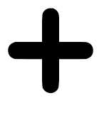

| Nom | Robot-guerrier géant "Big Emperor" |
| Histoire | Incarnation du rêve de tout homme. Fruit de l'union de 6 pirates, ce robot-guerrier géant se prépare à affronter le terrible Oz, mais... il lui manque le bras gauche ?!! |
| Type |
DEX |
| Classe 1 |  Tireur Tireur |
| Classe 2 |  Libre Libre |
| Coût | 50 |
| Combo | 4 |
| Emplacements de pouvoirs | 2 puis 3 après le dépassement de limites |
|
|
|
| HP | 3002 puis 3202 après le dépassement de limites |
| ATK | 1203 puis 1338 après le dépassement de limites |
| RCV | 210 puis 240 après le dépassement de limites |
|
|
|
| Captain Ability | Multiplie l'ATK des personnages de classe Tireur par 2,5 et les HP par 1,3. Si le coup spécial "Tactics 15 - Big Emperor" est utilisé, multiplie l'ATK des personnages de classe Tireur par 2,75 pendant un tour. |
| Special (27→13) | Multiplie les dégâts subis par 1,25 pendant 2 tours, multiplie les effets des cercles des personnages de classe Tireur par 1,75 pendant 2 tours et si au moins 5 personnages font un coup "PARFAIT", change les cercles des personnages de classe Tireur en cercles correspondants au tour suivant. |
| Crewmate Ability 1 | Rend les cercles [STR] et [QCK] avantageux pour le personnage. |
|
|
|
| Crewmate Ability 2 | Rend les cercles [TND] avantageux pour les personnages de classe Tireur. |
| Potential Ability 1 | Ajoute 50 points d'ATK au tour suivant lorsque des dégâts sont subis et réduit la durée des dégâts augmentés de 1 tour. |
| Ajoute 75 points d'ATK au tour suivant lorsque des dégâts sont subis et réduit la durée des dégâts augmentés de 1 tour. | |
| Ajoute 100 points d'ATK au tour suivant lorsque des dégâts sont subis et réduit la durée des dégâts augmentés de 1 tour. | |
| Ajoute 125 points d'ATK au tour suivant lorsque des dégâts sont subis et réduit la durée des dégâts augmentés de 1 tour. | |
| Ajoute 150 points d'ATK au tour suivant lorsque des dégâts sont subis et réduit la durée des dégâts augmentés de 2 tours. | |
| Potential Ability 2 | Permet aux attaques normales du personnage d'ignorer les barrières si les HP sont au maximum. |
| Permet aux attaques normales du personnage d'ignorer les barrières si les HP sont au maximum. | |
| Permet aux attaques normales du personnage d'ignorer les barrières si les HP sont au maximum. | |
| Permet aux attaques normales du personnage d'ignorer les barrières si les HP sont supérieurs ou égaux à 80%. | |
| Permet aux attaques normales du personnage d'ignorer les barrières si les HP sont supérieurs ou égaux à 50%. | |
|
|
|
Personnages soutenus :
|
|
| Ajoute 1% des HP du personnage en HP pour les personnages soutenus. | |
| Ajoute 2% des HP du personnage en HP pour les personnages soutenus. | |
| Ajoute 3% des HP du personnage en HP pour les personnages soutenus. | |
| Ajoute 4% des HP du personnage en HP pour les personnages soutenus. | |
| Ajoute 5% des HP du personnage en HP pour les personnages soutenus. | |
|
|
|
| Style | DEF |
| DEF | 275 |
| VIT | 106 |
| Special | Réduit la défense du personnage de 2 niveaux pendant 15 secondes, augmente la défense de tous les alliés (sauf le personnage) de 1 niveau pendant 15 secondes et augmente l'ATK des alliés de classe Tireur de 1 niveau pendant 15 secondes (CT : 27). |
| Réduit la défense du personnage de 2 niveaux pendant 15 secondes, augmente la défense de tous les alliés (sauf le personnage) de 1 niveau pendant 16 secondes et augmente l'ATK des alliés de classe Tireur de 1 niveau pendant 16 secondes (CT : 27). | |
| Réduit la défense du personnage de 2 niveaux pendant 15 secondes, augmente la défense de tous les alliés (sauf le personnage) de 1 niveau pendant 17 secondes et augmente l'ATK des alliés de classe Tireur de 1 niveau pendant 17 secondes (CT : 27). | |
| Réduit la défense du personnage de 2 niveaux pendant 15 secondes, augmente la défense de tous les alliés (sauf le personnage) de 1 niveau pendant 18 secondes et augmente l'ATK des alliés de classe Tireur de 1 niveau pendant 18 secondes (CT : 27). | |
| Réduit la défense du personnage de 2 niveaux pendant 15 secondes, augmente la défense de tous les alliés (sauf le personnage) de 1 niveau pendant 19 secondes et augmente l'ATK des alliés de classe Tireur de 1 niveau pendant 19 secondes (CT : 27). | |
| Réduit la défense du personnage de 2 niveaux pendant 15 secondes, augmente la défense de tous les alliés (sauf le personnage) de 1 niveau pendant 20 secondes et augmente l'ATK des alliés de classe Tireur de 1 niveau pendant 20 secondes (CT : 27). | |
| Réduit la défense du personnage de 2 niveaux pendant 15 secondes, augmente la défense de tous les alliés (sauf le personnage) de 1 niveau pendant 21 secondes et augmente l'ATK des alliés de classe Tireur de 2 niveaux pendant 21 secondes (CT : 27). | |
| Réduit la défense du personnage de 2 niveaux pendant 15 secondes, augmente la défense de tous les alliés (sauf le personnage) de 1 niveau pendant 22 secondes et augmente l'ATK des alliés de classe Tireur de 2 niveaux pendant 22 secondes (CT : 27). | |
| Réduit la défense du personnage de 2 niveaux pendant 15 secondes, augmente la défense de tous les alliés (sauf le personnage) de 1 niveau pendant 23 secondes et augmente l'ATK des alliés de classe Tireur de 2 niveaux pendant 23 secondes (CT : 27). | |
| Réduit la défense du personnage de 2 niveaux pendant 15 secondes, augmente la défense de tous les alliés (sauf le personnage) de 2 niveaux pendant 24 secondes et augmente l'ATK des alliés de classe Tireur de 3 niveaux pendant 24 secondes (CT : 27). | |
| Capacité | Augmente les HP des alliés de classe Tireur de 1 niveau. Si les HP sont en-dessous de 30%, augmente la défense du personnage de 3 niveaux. |
| Augmente les HP des alliés de classe Tireur de 2 niveaux. Si les HP sont en-dessous de 30%, augmente la défense du personnage de 3 niveaux. | |
| Augmente les HP des alliés de classe Tireur de 3 niveaux. Si les HP sont en-dessous de 30%, augmente la défense du personnage de 3 niveaux. | |
| Augmente les HP des alliés de classe Tireur de 4 niveaux. Si les HP sont en-dessous de 30%, augmente la défense du personnage de 3 niveaux. | |
| Augmente les HP des alliés de classe Tireur de 5 niveaux. Si les HP sont en-dessous de 30%, augmente la défense du personnage de 3 niveaux. | |
| Actions principales | ATK normale → ATK normale → Soigne les alliés environnants au niveau 1 (courte portée) |
| Cible des actions | Vise les ennemis proches. |
|
|
|
|
 |
|
|
|
|
|
|
|
| Stage 1 (A) |
Général zombie
HP : 50 000 HP. ATK : 5 990 points de dégâts tous les 2 tours (de un à 3 tours avant la première attaque). 1er tour :  Il
enragera tous les ennemis pendant 99 tours. Il
enragera tous les ennemis pendant 99 tours.HP : 15 000 HP. ATK : 5 020 points de dégâts tous les 2 tours (de un à 2 tours avant la première attaque). HP : 17 HP. ATK : 2 200 points de dégâts tous les 3 tours (de 2 à 4 tours avant la première attaque). Défense : 100 000. HP : 13 HP. ATK : 1 580 points de dégâts tous les 2 tours (de un à 3 tours avant la première attaque). Défense : 100 000. |
| Stage 1 (B) |
Général zombie
HP : 50 000 HP. ATK : 5 990 points de dégâts tous les 2 tours (de un à 3 tours avant la première attaque). 1er tour : Il
enragera tous les ennemis pendant 99 tours.HP : 15 000 HP. ATK : 5 020 points de dégâts tous les 2 tours (de un à 2 tours avant la première attaque). HP : 17 HP. ATK : 2 200 points de dégâts tous les 3 tours (de 2 à 4 tours avant la première attaque). Défense : 100 000. HP : 13 HP. ATK : 1 580 points de dégâts tous les 2 tours (de un à 3 tours avant la première attaque). Défense : 100 000. |
| Stage 2 |
Trois
zom
bies
HP : 15 000 HP. ATK : 5 020 points de dégâts tous les 2 tours (de un à 2 tours avant la première attaque). HP : 2 000 HP. ATK : 4 290 points de dégâts tous les 3 tours (de un à 2 tours avant la première attaque). Lorsqu'il attaquera : Il restaurera 2 617 HP à l'équipe. HP : 2 000 HP. ATK : 4 290 points de dégâts tous les 3 tours (de un à 2 tours avant la première attaque). Lorsqu'il attaquera : Il mettra un cercle [RCV] au capitaine. |
| Stage 3 |
Général zombie
HP : 50 000 HP. ATK : 9 090 points de dégâts tous les 2 tours (de un à 3 tours avant la première attaque). En-dessous des 50% d'HP :  Il multipliera son attaque par 2 (18 180 points de dégâts)
pendant 3 tours. Il multipliera son attaque par 2 (18 180 points de dégâts)
pendant 3 tours.HP : 30 000 HP. ATK : 9 090 points de dégâts tous les 2 tours (de un à 3 tours avant la première attaque). En-dessous des 50% d'HP :  Il bloquera le multiplicateur de combos à 2 pendant 3 tours. Il bloquera le multiplicateur de combos à 2 pendant 3 tours.HP : 30 000 HP. ATK : 9 090 points de dégâts tous les 2 tours (de un à 3 tours avant la première attaque). En-dessous des 50% d'HP :  Il augmentera sa défense à 90 000 pendant 3 tours. Il augmentera sa défense à 90 000 pendant 3 tours.HP : 15 HP. ATK : 3 880 points de dégâts tous les 3 tours (de 2 à 4 tours avant la première attaque). Défense : 100 000. HP : 6 HP. ATK : 3 990 points de dégâts tous les tours. Défense : 50 000. Lorsqu'ils attaqueront : Ils mettront le "Lien" sur un personnage aléatoire pendant 6 tours. |
| Stage 4 |
Chopper et Franky
HP : 400 000 HP. ATK : 4 000 points de dégâts tous les tours. Actions préventives : Ils mettront le "Lien des coups spéciaux" sur les personnages qui ne sont pas capitaines pendant 3 tours. En-dessous des 20% d'HP :  Ils échangeront les places entre le capitaine et un personnage
qui n'est pas capitaine pendant 3 tours. Ils échangeront les places entre le capitaine et un personnage
qui n'est pas capitaine pendant 3 tours.HP : 500 000 HP. ATK : 6 500 points de dégâts tous les 3 tours. Actions préventives :  Ils mettront une immunité pendant 99 tours. Ils mettront une immunité pendant 99 tours.En-dessous des 20% d'HP : Ils attaqueront à 19 000 points de dégâts. HP : 300 000 HP. ATK : 3 500 points de dégâts tous les tours. Actions préventives : Ils se mettront une barrière de 1 coup "PARFAIT" pendant 3 tours. |
| Boss |
Big Emperor
HP : 3 000 000 HP. ATK : 7 780 points de dégâts tous les tours. Actions préventives : Il mettra des effets selon le type du capitaine :
 Il se mettra une
barrière de 500 000 HP pendant 2 tours. Il mettra des
cercles
[BLK]
à toute l'équipe (il ne changera pas les cercles
[RCV]
et
[TND]
). Il mettra la
"Paralysie" sur tous les personnages pendant 3 tours. Il se mettra une
barrière de 500 000 HP pendant 2 tours. Il mettra des
cercles
[BLK]
à toute l'équipe (il ne changera pas les cercles
[RCV]
et
[TND]
). Il mettra la
"Paralysie" sur tous les personnages pendant 3 tours. Il réduira les
dégâts subis de 80% pendant 3 tours. Il changera son type
en
QCK
. Il se mettra une
barrière de 500 000 HP pendant 2 tours. Il mettra des
cercles
[BLK]
à toute l'équipe (il ne changera pas les cercles
[RCV]
et
[TND]
). Il changera son type
en
STR
. Il mettra des
cercles
[BLK]
à toute l'équipe (il ne changera pas les cercles
[RCV]
et
[TND]
). Il réduira les
dégâts subis de 80% pendant 3 tours. Il réduira les
dégâts subis de 80% pendant 3 tours. Il changera son type
en
QCK
. Il se mettra une
barrière de 500 000 HP pendant 2 tours. Il mettra des
cercles
[BLK]
à toute l'équipe (il ne changera pas les cercles
[RCV]
et
[TND]
). Il changera son type
en
STR
. Il mettra des
cercles
[BLK]
à toute l'équipe (il ne changera pas les cercles
[RCV]
et
[TND]
). Il réduira les
dégâts subis de 80% pendant 3 tours. Il réduira de 99% la
partie des dégâts infligés par l'équipe qui excède 10 000 pendant 3 tours. Il changera son type
en
PSY
. Il mettra la
"Paralysie" sur tous les personnages pendant 3 tours. Il mettra le "Lien
des coups spéciaux" sur les personnages qui ne sont pas capitaines pendant 3 tours. Il mélangera les
cercles. Il s'enragera pendant 99 tours. Il réduira de 99% la
partie des dégâts infligés par l'équipe qui excède 10 000 pendant 3 tours. Il changera son type
en
PSY
. Il mettra la
"Paralysie" sur tous les personnages pendant 3 tours. Il mettra le "Lien
des coups spéciaux" sur les personnages qui ne sont pas capitaines pendant 3 tours. Il mélangera les
cercles. Il s'enragera pendant 99 tours.En-dessous des 20% d'HP : Il projettera hors de l'écran 2 personnages aléatoires et qui ne sont pas capitaines. |